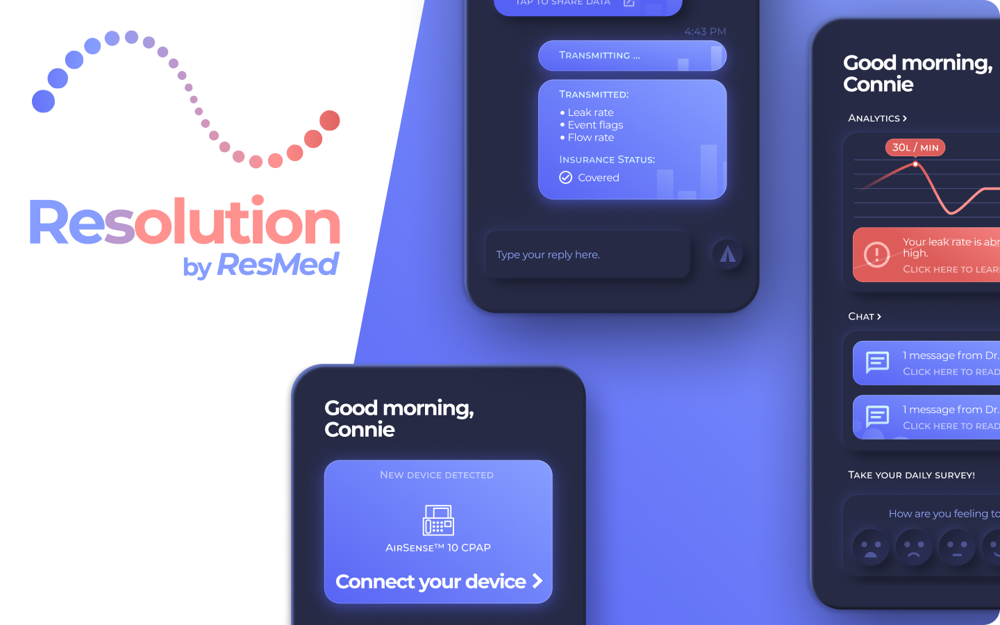
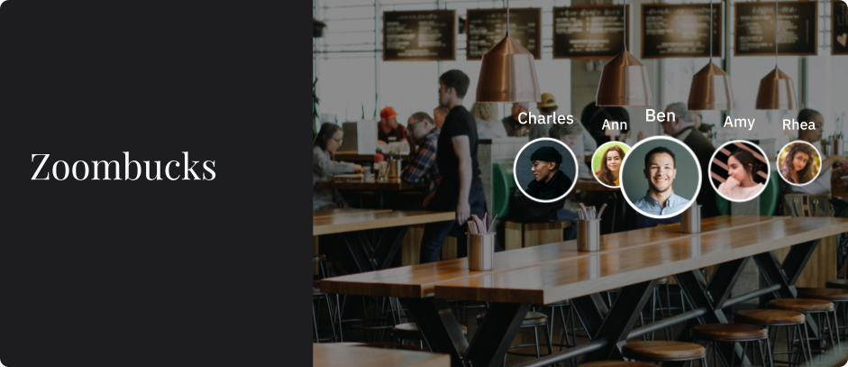
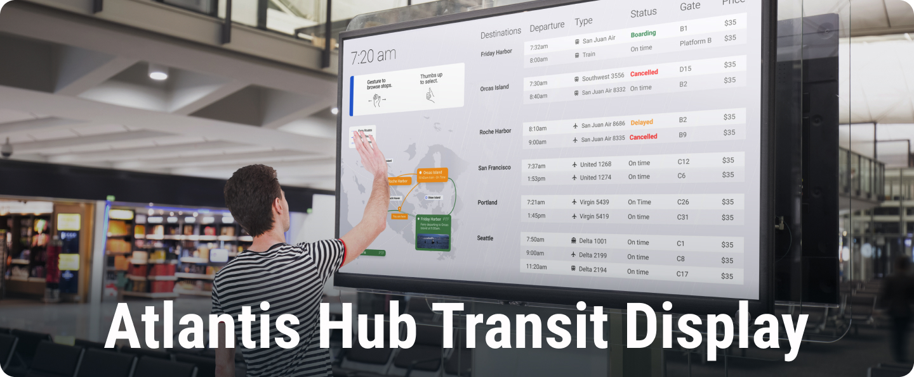

1. Critterbits IoT Concept
Spring 2020

Collaboration with Shuqi Yang, Jee Yeon Rim and Ariana Daly.
Our team was tasked with imagining a IoT concept that focused on citizen engagement. The final deliverable would be a Kickstarter-type video and a final presentation pitch. After researching the general domain of citizen engagement, storyboarding several different concepts, and using the speed dating research technique, my team focused in on the question: How might ubiquitous computing help community gardens?
Our concept product comes in two parts: the many physical Critterbits that roam the garden, and the app that all community garden members will have access to. All of our critterbits are equipped with sensors that provide data about the environment so that the gardeners can make more informed decisions and take better care of their plants. They also use machine learning techniques to identify garden pests and plant diseases.
Furthermore, by working together, the Critterbits can collect data for a large amount of land on a microscopic level. By aggregating this data, we can do things such as mapping an infestation.
Here are the features that we designed:
Photo Sharing & Discussion:
- Connecting users to each other
- Resolving community-wide issues
- Bonding over shared photos
Plant Alert & Education
- Diagnosis on the damage
- Discuss and share resources
Live Streams
- Fun way to monitor plants
- Promote engagement
- See cute animals and bugs
The Problem:
Distance and time make plant growing hard, and the commuity aspect is a lost opportunity
The Solution
- Plant Diagnosis & Remedies
- Community-wide Discussion
- Photo Sharing & Bonding
See our pitch slides below
2. Resolution Mobile Service Design
Spring 2020

Collaboration with Gautham Sajith, Anurati Sodani, and Shuqi Yang.
My team researched and designed a mobile service design solution for the company ResMed (our project has no real affiliation with the company).
See the full process book below
See our pitch slides below
3. Zoombucks Conversational Interface
Spring 2020

Collaboration with Junwoo Cheong, Selena Ma, Jamie Dorst and June Kim.
Design context
Strict social restrictions have left individuals feeling isolated. How might a conversational user interface make those who are in physical isolation still feel connected to others?
The problem
We can no longer physically work in collaborative spaces like studios, coffee shops, or libraries. However, working around others can increase productivity and motivation, as well as foster organic collaboration and feedback amongst peers.
Two part solution
- A Virtual Social Ground to mimic the real-life conditions for friends to stop by and interact.
- A Work Companion that listens to, brainstorms with, and inspires you.
See our pitch slides below
4. Atlantis Hub Transit Display
Fall 2019

Collaboration with Haley Park, Michael Silvestre, Connie Ye